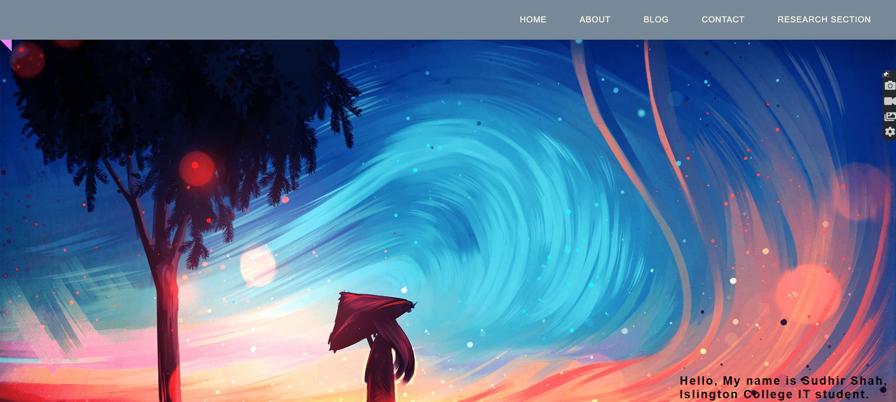
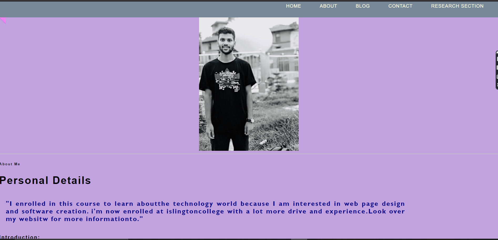

I was able to create this site after conducting some study.
The following are the differences between the webpage I visited and
the one I created:
Comparision 1
Researched webpage
My Webpage

This is one of the website I looked at.
In this website the desinner kept home page very
simple and attractive kept background image And navigation bar in left side .And
in footter dissiner gave his name and some information
about his website.
I tried to make something similar
but with some change i made this web site
like i put navigation bar in right side,background image
change and then i provide my name and college name and faculty in footer.
Comparison2
Research Webpage
My Webpage
This is one of the websites I looked at.
The ribbon-like navigation bar was one of my favorites.
I attempted to construct a navigation bar with a
hover effect in the same way.
Comparison3
Researched webpage
My Webpage

This the one blog i visited.And i like the picture placement
I tried to create similar kind of website but
i have made some changes like i have written why
i enrrolled this course and introduction and my certification in table form.
Comparision4
Researched Webpage
My Webpage
This is also one of the homepage i visited.
I like the concept of social media icons placed in about homepage